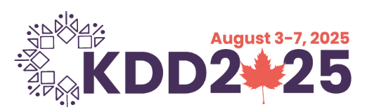

AI Teammates for the Modern Developer: Building Collaborative Coding Agents
Day on AI Reasoning | August 2025
Co-presented by Shweta Garg
Day on AI Reasoning | August 2025
Co-presented by Shweta Garg
 Principal Applied Scientist at Microsoft |
Principal Applied Scientist at Microsoft |  Previously at AWS AI Labs
| LinkedIn
Previously at AWS AI Labs
| LinkedIn